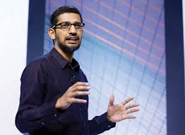

Sundar Pichai
| Name: | Pichai Sundararajan |
|---|---|
| Born: | 10 June 1972 (age 48 years) |
| Nationality: | American |
| Anual Salary: | 20 lakhs USD (2020) |
| Education: | Wharton School of the University of Pennsylvania (2000–2002) |
| Children: | Kavya Pichai, Kiran Pichai |
Early Life and Education :
- Pichai was born in Madurai, Tamil Nadu, India. His mother, Lakshmi, was a stenographer, and his father, Regunatha Pichai, was an electrical engineer at GEC, the British conglomerate. His father also had a manufacturing plant that produced electrical components. Pichai grew up in a two-room apartment in Ashok Nagar, Chennai and had a Hindu upbringing.
- Pichai completed schooling in Jawahar Vidyalaya, a Central Board of Secondary Education school in Ashok Nagar, Chennai and completed the Class XII from Vana Vani school at IIT Madras. He earned his degree from IIT Kharagpur in metallurgical engineering and is a distinguished alumnus from that institution. He holds an M.S. from Stanford University in materials science and engineering, and an MBA from the Wharton School of the University of Pennsylvania, where he was named a Siebel Scholar and a Palmer Scholar, respectively.
Career :
- Pichai worked in engineering and product management at Applied Materials and in management consulting at McKinsey & Company. Pichai joined Google in 2004, where he led the product management and innovation efforts for a suite of Google's client software products, including Google Chrome and Chrome OS, as well as being largely responsible for Google Drive. He went on to oversee the development of other applications such as Gmail and Google Maps. On November 19, 2009, Pichai gave a demonstration of Chrome OS; the Chromebook was released for trial and testing in 2011, and released to the public in 2012. On May 20, 2010, he announced the open-sourcing of the new video codec VP8 by Google and introduced the new video format, WebM.
- On March 13, 2013, Pichai added Android to the list of Google products that he oversaw. Android was formerly managed by Andy Rubin. He was a director of Jive Software from April 2011 to July 30, 2013. Pichai was selected to become the next CEO of Google on August 10, 2015 after previously being appointed Product Chief by CEO, Larry Page. On October 24, 2015 he stepped into the new position at the completion of the formation of Alphabet Inc., the new holding company for the Google company family.
- Pichai had been suggested as a contender for Microsoft's CEO in 2014, a position that was eventually given to Satya Nadella.
Personal life :
He is married to Anjali Pichai, née Haryani, a chemical engineer from Kota, Rajasthan. They met as classmates at the Indian Institute of Technology Kharagpur. The couple have two children. Pichai's interests include football and cricket.
References :
Click here to know more about Sundar Pichai !!